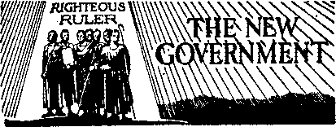

New Jersey—'‘The Boss Is on the Run,”
Mean Thieves of May’s Landing, etc. 11
Partially Rewarded by a Parking Ticket 12
Witnessing to an Honest Official
Bringing the “Past” Up to Date
Aims of the Soviets and the “Church”
“Thy Word Is Truth”
The Rights of the American People
And Maybe WTe’ll Learn Something Too 20
Let’s Discuss the War—and the Peace 23
Presenting “This Gospel of the Kingdom” “God’s Word on Vital Subjects”
Defeat of Persecution in Odessa
■ Published every other Wednesday by WATCHTOWER BIBLE AND TRACT SOCIETY, INC.
117 Adams St-, Brooklyn, N. ¥., L*. S. A.
Editor Clayton J. Wood worth.
Business Manager Nathan H. Knorr
' Five Cents a Copy
, $1 a year in the United States $1.25 to Canada and all other countries
NOTICE TO SUBSCRIBERS
Remittances; For your own safety, remit by postal or express money order. When coin or currency la lost in the ordinary mails, there Is no redress. Remittances from countries other than those named below may be made to the Brooklyn office, but only by International postal money order.
Receipt of a new or renewal subscription will be acknowledged only when requested. Notice cf Expiration is sent with, the journal one month before subscription expires. Please renew promptly to avoid loss of copies. Send change of address direct to us rather than to the post office. Your request should reach us at least two weeks before the date of Issue with which ft. is to take ■ effect. Send your old as well as the new address. 'Copies will.not be forwarded, by.the post office to your new address unless extra postage is provided by you. -
Published also in Greek, Portuguese, Spanish, and Ukrainian. .
OFFICES FOR OTHER COUNTRIES
England 34 Craven Terrace, London, W.2
Australia 7 Beresford Hoad, St.ra.th fit Id, N.S.W. South Africa 623 Boston House, Cape Town
Mexico Calzada de Melchor Ocampo 71. Mexico. D.F.
Brazil Caixa Postal J 319, Rio de Janeiro
Argentina Calle Honduras 5646-48, Buenos .Aires Entered as second-class matter at Brooklyn, N. Y., under the Act of March 3, 1879.
2
The Too-fresh Judge Cook
; ♦ A while back, Municipal Judge J. D. Cook, Jr., of Texarkana, Arkansas, made great newspaper name and fame for himself by sentencing one of Jehovah’s witnesses to a fine of $100 and thirty days in jail for circulating literature which the United States Supreme Court has officially decided he has a perfect right to circulate. In enlarging himself in the public eye Judge Cook went to the trouble of referring to the Department of Justice and the federal Bureau of Investigation as Washington Wheel Chair Artists’. Having thus put himself on official record as a bench jackass, it is a pleasure to note that, by request of the city attorney, the case in connection with which he gained his notoriety has been dismissed. And thus one more vicious newspaper hero comes to nought.
A Curious Jersey Headline
♦ The Hudson News has an interesting headline about the progress of religion in the vicinity of Palisades Amusement Park, opposite 125th Street ferry, New York. city. It says, ,
Huge Bingo Game Has Hudson County Churchmen Up in Arms for Robbing Its Churches of Their Take from Illegal . Games 1
Upon reading the account, it seems that the Amusement Park has so many gambling games going that the local churches’ games seem tame and cold and don’t draw either crowds or cash. Awful!
Sawdust and Shavings for Insulation
♦ Dry sawdust and shavings for insulation are encouraged by Canadian authorities. These materials, when put in the walls, do not make breeding-places for vermin, insects or rodents, nor do they encourage the decay of timber. It has been proved that when properly7 packed these materials provide a good fire-stop. Certainly7 their use makes a house warm in winter and cool in summer.
CONSOLATION
“And in His name shall the nations hope.”—Matthew 12:21, A.R.V.
Volume XXIV Brooklyn, N.Y,, Wednesday, January 20, 1&43 Number 609
The Northwest Africa Front
WITH the struggle for world domination raging throughout the earth, all humanity was and is intensely interested in the quite unexpected news that the long-looked-for “second front” was opened in Northwest Africa pn Saturday, November 7, 1942.
Along with other thinking people, the readers of this magazine are interested. Many of their loved ones are involved. Thus, for example, the mother of Lieut. Gen. Dwight D. Eisenhower (in command of the expedition) is one of Jehovah’s witnesses. Incidentally, had she exercised her privilege of attending ,the Christian assemblies at Little Rock, Arkansas, Springfield, Illinois, or Klamath Falls, Oregon, she would have stood a good chance of being killed by the unAmerican mobs that in those three shameless cities, September IS, 19 and 20, 1942, undertook to destroy all of the four freedoms for which Lieut. Gen. Eisenhower and all the American boys with him are risking their lives.
It is not the office of this magazine to offer military advice, of which the newspapers have been nauseatingly full for more than three years. Nor would this periodical undertake to keep jgts readers posted on the march of events which, as in this instance, changes th efface of the world overnight, and amazes, mankind.
The People Have a Right
But the people have a right to know something about what northern Africa is like, what kind of people live there, the manner of their life, the i^imate, the crops and other possibilities, .the governments, the religion, and something of the early history.
At the moment the struggle is on for Tunisia, and, oddly enough, it is between the Axis powers (“the king of the north”) and the United Nations (“the king of the south”); and on this particular front “the king of the north” is in the north, and “the king of the south” is in the south. ■
The city of Tunis is in the war news. It was near here that Phoenicians founded one of the most famous cities of antiquity, Carthage, the capital of a rich and powerful commercial republic. The city was founded about eight and a half centuries before Christ, and seven hundred years later had a population of about a million and was in the enjoyment of extraordinary prosperity. Recent excavations show that the streets crossed each other regularly at right angles. The long streets ran parallel to the quays and were distant from each other about 1.50 feet. A great commercial metropolis.
No foreign traders were allowed at any of the Carthaginian western colonies, which extended to Madeira, the Canary Islands and along the West African coast. Only the port of Carthage was open to foreigners. Traders found elsewhere were drowned. Carthaginian sailors concealed the routes which-they followed, and one sea captain sank his vessel rather than reveal its course when pursued by a Roman galley.. Carthage claimed the monopoly of Mediterranean waters and seized every foreign ship found between Gibraltar and the island of Sardinia, off the west coast of Italy.
A Fight with "the King of the North”
It was inevitable that, Carthage would sooner or later come into collision with the growing power of Home, in which market, in times of peace, the Carthaginians sold the slaves, ivory, metals, precious stones and all the products of , central Africa and Spain, which came 1 to them either by caravan or by ship. The district around Carthage, with its amazing fertility, was the granary of the city, as it was later that of Home.
The first wars with Home were fought by Carthage for the defense of her possessions in Sicily, and ended in a partial Boman triumph, causing great bitterness between the two cities. And here enters the story of Hannibal.
When Hannibal was nine years old his father made him swear on the altar eternal hatred for the Romans. A second war broke out and Rome sent ambassadors to Carthage demanding that Hannibal be delivered up. Hannibal started for Rome, but not the way the Romans had expected -him to come, and not as a prospective prisoner. He came via Spain with forty elephants, 12,000 horsemen, and 90,000 foot soldiers. This was considered a large army in those days back there, 218 B.C.
In midwinter, and ■with what was then considered incredible rapidity, Hannibal’s army crossed southern France and came over the Alps by the Little St. Bernard pass, and by midsummer had conquered most of Italy, down to within sight of Rome itself. The Carthaginian senate withheld all further support, but Hannibal held his ground in Italy for sixteen years. The Romans, seeing that he could not move, raised an army and attacked Carthage.. Hannibal returned to Africa to defend the city, but was defeated, and committed suicide rather than return as a prisoner to Rome Kto torture and death.
A peace was patched up, but, after another half-century, Rome, now the master of the world, determined finally to destroy Carthage. In the year 146 B.C., after a three-year fight, this city, which at one time had grasped at the supremacy of the world, perished, leaving no historians to tell the tale. Given the job of plundering and burning the city, the Roman troops reduced it to a bed of cinders, blackened stones, broken glass, fragments of metal twisted by fire, and half-burned bones, still found to a depth of from thirteen to sixteen feet, which bear grim witness to the terrible fate -which overtook the city. Everything was leveled to the ground and the ruins were sowed with salt. The site of the city was dedicated to the demons with solemn curses, and all human habitation throughout the vast ruined area was expressly forbidden. These ruins lie about ten miles to the north-west of Tunis today.
The population of the city of Tunis, the capital and largest city in Tunisia, in the year 1926, consisted of 185,996, of whom there were 106,800 Moslems, 24,131 Jews, 27,922 French, 24,076 Italians, and others.
French North Africa
Take a map of the United States. Draw- a line from Montreal, through Pittsburgh, ,to Atlanta, Georgia; thence another line to Jacksonville, Florida; connect that w’ith Portland, Maine, and thence back to Montreal, and you have an excellent idea of the size and possibilities of the large and fertile area -which goes to make up Morocco, Algeria and Tunisia. These are the countries that go to make up French North Africa.
This picture is a very apt one, except that the Atlas mountains, running (as do the Appalachians) from southwest to northeast/ have their rivers flowing north and west into the Atlantic and Mediterranean, while the rivers of the states on the Atlantic coast of the United States flow to the south and east.
Illustrations of the African rivers are the Muluya, Sebu, Um er Rabia, Dra’a and Ziz. Concerning the first of these The Encyclopedia Britannica says:
Its course is largely unexplored save by native French officials. About 34° 20' N. General Ccivile found it some 200 yards wide, but quite shallow; about 25 miles east of its source, where it is crossed by the route to Ziz, it is already a powerful stream with a deep bed cut in the granite rock, and shortly afterwards it is joined by the W. Sgimmel, a still larger affluent. .
A shallow river 600 feet wide is quite a river and would answer very well the description of the Susquehanna, which drains a large part of New York and Pennsylvania, and which, at Harrisburg, is so shallow at times, in the summer season, that one could almost walk across it. Yet it may, at other times, become a flood that in its upper reaches will turn the district around Wilkes-Barre into a huge lake and endanger homes and other property in a dozen other cities and towns.
Don’t think anything of it if you have never heard much about these African rivers. The French have been in there only a relatively short time, and before that nobody could get in except Moslems unless they were ready to be turned into frankfurters when they were discovered to be not of the faithful of that particular sect.
The Atlas Mountains ,
Maybe you have never hetird of the peaks in the Atlas mountains. Two of these are the Jebel Ayashnn (14,600 feet) and Tamjurt (14,500 feet). They
JANUARY20, 1943 , are there all right, and there are many more. Concerning these mountains the same authority says:
While the snow remains on the higher peaks during the greater part of the year, no peak has a perpetual cover of snow. The whole area is 500,000 square miles, including a great variety of surface, mountains, valleys and extensive plains. The valleys are very fertile, are nearly all under cultivation and compare most favorably with other Mediterranean regions.
You have probably heard of Mount Mitchell, in the Appalachians in North Carolina. It is the highest peak in that great chain extending from northern Alabama to northern New York. It is 6,711 feet high. Or you have certainly heard of Mount Washington, in New Hampshire, which towers to 6,233 feet. It thus appears that the Atlas range peaks are considerably more than twice the height of the highest peak in the Appalachians.
Moreover, Jebel Ayashim, in the Atlas mountains, is 466 feet higher than Pike’s peak, Colorado, or any other of the forty peaks in that state that are over 14,000 feet in height. From these facts it is to be seen that the Atlas mountains are of considerable height, covered with snow most of the year, and are therefore sources of streams running in all directions. The valleys, approximately as long as’the valley of the Connecticut, Hudson, Delaware, Susquehanna, Potomac, James or Savannah river (and one of
them much longer than any of these), are fertile throughout their length, where the rivers run north and west into the Atlantic and Mediterranean; but their course is short and troubled where they run to the south and east. On this point The Encyclopedia Americana says:
The southern slope of the Atlas reaches the * great desert, from which it is separated by a region of sand -hills, shifting with every strong wind, and gradually making encroachments on the fertile lands at the foot of the mountains.
* The Sahara Desert
That brings one to the Sahara desert, which latter is a strip of territory reaching from the Atlantic to the Nile, Roughly, this is a territory about 600 miles wide for the wdiole distance of some 3,500 miles. But don’t get the idea that the Sahara is nothing but sand. To be sure, there are sand and rocks aplenty, with mountains reaching 8,000 feet, even in the midst of the desert, which is higher than anything in the Appalachian system.
In the first place, there are 2,000,000 people living in the French Sahara desert, and they would not be living there unless they were able to make a living. Here is how they live. The encyclopedia, after mentioning that the sand dunes and rocky surfaces arc interspersed with oases, declares that the date palm flourishes on these green spots; also the olive tree. Apples, peaches, oranges, grapes, etc., grow, and wheat, barley, rice, durra and other tropical crops are raised, and there is a considerable variety of flora. Then there are domestic animals, such as camels, asses, black cattle, etc., of fifteen species; glso jerboas, foxes, jackals, baboons, hyenas, mountain sheep, etc.; about eighty species of birds, among which is the ostrich. There are also tortoises, lizards, and chameleons. The edible frog, and fish, also occur. There is an important trade in silk tissues and mixed goods, ivory, ostrich feathers, gums, spices, musk, hides, gold dust, indigo, cotton, palm oil, kola nuts, silver, dates, salt, and alum. Many thousands of tons of phosphate are extracted.
Radio Penetrates the Saharas
It is the discovery of radio that has really made the Sahara penetrable. Here and there, all through the Sahara, are the oases, the locations of which in bygone years were exactly known only to the Arabs. Now others know where they are, too. By wireless, every one of them can keep in touch with governmental headquarters, and, if need be, in an hour, or two or three, any needed assistance can be sent by airplane. The Arab, with his “ship of the desert”, the camel, is no longer in control. And besides the radio and the airplane, there is the automobile. In recent years some -wonderful trips have been made by trucks and even light cars to various parts of the Libyan and Saharan deserts, and these have all helped to break down the former isolation.
The development of the Sahara region would, of course, be greatly aided by the construction of several railroads across it, similar to the three lines that cross Arizona, the three that cross Nevada, and the three that cross Idaho. Many and fast trains cross the Great American Desert day and night, constantly. The projected French railroad across the Sahara would be only 1,050 miles long, and American engineers would not consider its construction a difficult problem.
The French government and private individuals have experienced success in their efforts to care for traffic by specially designed motorcars. Regular routes are maintained to Timbuktu, and elsewhere, as will be shown in the next issue. Timbuktu, it should be observed, is clear Across the Sahara. Other lines go only part way, shuttling back and forth. What is wrong with that? Nothing at all. It is done elsewhere too.
The Hinted States has an excellent
CONSOLATION
mail service to every point, but it has some long shuttle lines with the mails. Thus the mailman goes from Craig, Colo., 106 miles to Willow Springs Ranch, Utah. Then he cannot go any farther, and turns around and goes back ■ to where he started. The mail from Winnemucca, Nev., to Denio, Idaho, goes in the same manner 110 miles. That from Ingomar, Mont., to Jasper, Mont., 114 miles; from Bernalillo, N. Mex., to Tapi-citoes, N. Mex., 123 miles; from Thompsons, Utah, to Bluff, Utah, 141 miles; from Kemmerer, Wyo., to Bondurant, Wyo., 148 miles; and from Flagstaff, Ariz., to Kayenta, Ariz., 160 miles. A few years ago the routes were much longer, some of them, but gradually they are being connected one with another, until the inaccessible spots in the desert are few and far between.
Sahara’s Future Blessings
As the Great American Desert, by vast human irrigation projects, is rapidly being turned into a paradise, so the time will come when the Sahara desert will, by divine ‘irrigation projects’, “rejoice, and blossom as the rose.” Moreover, all that is needed in the dry zones of North Africa and North America is rain, of which' the Lord has great quantities stored up in adjacent oceans and seas, and the Lord could make more if He wished to do so. It is easy for Him. He did it before; all He would have to do would be to blend together sufficient quantities of the two gases oxygen and hydrogen that make the bulk of all the seas. ;
Meantime restless, ambitious, and energetic man never ceases to explore every possibility of bringing.every part of the earth into greater productivity. Thus, although the Sahara desert is 350 miles south of the shores of the Mediter-' ranean throughout Morocco, Algiers and Tunisia, it comes right up to.the Mediterranean at some places in Lybia and Egypt, and, in some of those places, the
JANUARY 20, 1043 floor of the desert is below the level of the Mediterranean. One of these depressions, Qattara, Egypt, is often in the news. America has such a depression in the Imperial Valley, .California.
Noticing tliese depressions, a famous engineer some years ago made the proposition in all seriousness that the nations should unite to dam the strait of Gibraltar, the rising waters of the Mediterranean to flood these depressions. The evaporation from the inland lakes so formed would, he calculated, produce rain clouds which would water a vast area. The rainlessness of the Sahara, it is explained, is due to the direction of certain winds,, which are deprived of their moisture before reaching these lands.
Considerable attention foregoing has been devoted to the Sahara because so relatively little is known of the great rich belt north of it, 350 miles wide and 1500 mile!? from east to west, which covers an area of about the size of New Hampshire, Vermont, Massachusetts, Rhode Island, Connecticut, New York, New Jersey, Pennsylvania, Delaware, Maryland, District of Columbia, Virginia, North Carolina, South Carolina and Georgia. ’
How is transportation conducted throughout this vast area stretching from Casablanca in the west to Tunis in the east? Well, how do the people of Portland, Maine, get to Jacksonville, Fla.? They can go four ways. They can take a train, with one or more changes of cars en route, or they can take a steamer, if they can get one in these days of submarines, or they can go by airplane, or they can go by automobile. The' same is the case in northern Africa. There are railroads connecting all the important points (see the map on page 5), as there are in the eastern part of the United States. Within the last' century the French have been doing in northern Africa what Americans have been doing in the United States.
- 7
The Barbary States
The four Barbary states, Morocco, Algeria and Tunisia, all of which are under French control, and Libya, which " is under Italian control, have a total population of about 18,500’,000, most of whom are Berbers, i. e., to the Romans 1 they were barbarians. The Berbers are * a fine people, thin, strong, robust, with beautifully formed bodies, and brown complexion. They often have light hair, and sometimes blue eyes. Mohammedans in religion, they are said to be generally straight and honest in their dealings, comparing favorably with the Arabs, and of high intelligence. They are of Semitic stock, remarkably industrious.
For centuries the Barbary states were a thorn in the side of the rest of the world. When all the rest of the world went Roman Catholic, northern Africa remained independent. When the Saracens overran the Barbary states they put all Christians to the edge of the sword, and then these countries became solidly Mohammedan.
It is important for those who would know something about the Barbary states to have considerable information about Mohammed, how he came to be a teacher, what he taught, and why today there are more Mohammedans in the world than there are Roman Catholics in Europe, Asia and Africa, and why there are more Moha'mmedans in the world, by 70,000,000 people, than there are of all the Protestants and Jews in the whole world put together. The New York World Almanac gives the Mohammedan population of the earth for 1942 as 220,978,848. This is 30 percent more than the total population of North America regardless of what the people believe. What is it that holds these people together?
When Mohammed was born (A.D.570) the people of Arabia worshiped the stars and the demons, with this result, as explained in M’Clintock and Strong’s Cyclopaedia:
These deities, with many other images of 8 the personified powers of nature, rudely represented by idols of every variety and shape, were principally gathered ’round the ancient Kaaba—the pantheon of Arabian idolatry; and their worship was accompanied, not only with the most horrible rites and shocking ceremonies of a degraded paganism, but even with human sacrifices and cruelties of every description. Even children were immolated by some of the ruder clans to the idols, while others, as Kendites, buried their daughters alive.
The so-called "Christians” of that time, divided into Nestorians, Jacobites, Marcionites, and Manicheans, were as far from the spirit of true Christianity as one can well imagine. Deifying the mother of Jesus, many adored her as the third person in the "Trinity”, which probably gave rise to the "Christian” tritheism so often dwelt on by Mohammed. (The Roman Hierarchy virtually deifies Mary to this day.)
Mohammed Possessed by Demons
Mohammed was so unfortunate as to have as a mother one who herself had the supreme misfortune of being demonized. He was by descent a member of the aristocracy of Mecca, but the branch of which he was an offspring was poor. Aminah, his mother, possessed a peculiarly nervous temperament, and used to fancy, while between sleeping and waking, that she was visited by spirits. Mohammed himself, according to the oldest and most trustworthy accounts, was an epileptic. He was believed to be possessed of evil spirits and at first he himself believed this. Gradually, however, he came to the conclusion, assisted by his friends, that the demons had no power over so pure and pious a man as he was, and he decided that he was not controlled by evil spirits, but by good spirits, angels. These he believed he saw in dreams or even while awake. He was inclined to hallucinations of vision and audition, and afflicted with a morbid state of both body and mind. What seemed to him remarkable after such
CONSOLATION
epileptic attacks he accepted as revelation, and at least in the early stages of his career he firmly believed in them. This gave him the courage and endurance he required to brave the difficulties which he had to face and overcome.
At first Mohammed tried to bring the Jews over to his stand that he was the promised Deliverer or Messiah. But when the Jews ridiculed him and angered him with their constant taunts, he changed his tune and became their bitterest enemy, seeking a closer alliance with the heathen Arabs. These he sought to please by adopting practices to their liking.
Although at first Mohammed insisted upon liberty of conscience and opposed religious violence, he came to hold that Islam (his teaching that Allah was God, and himself God’s prophet) should, if necessary, be defended and propagated by the sword. He said:
The sword is the key of heaven and hell: a drop of blood shed in the cause of God, or a night spent in arms, is of more avail than two months of fasting and prayer; whoever falls in battle, his sins are forgiven him, and at the day of judgment the loss of his limbs shall be supplied by the wings of cherubim.
Before long Mohammed sanctioned plunder and robbery, and that even in the so-called “sacred months”. Many an assassination was instigated by the prophet himself. In all these things he did not differ materially from the leaders of the Catholic religion of the day and sinep.
The Koran
Each of the 114 suras, or chapters, of Mohanmied’s small book (about the size of the “New Testament” Scriptures) starts out with the words “In the name of God”. The book was actually dictated by one or more demons posing as Almighty God. One of the leading propositions in the book is the teaching of the Devil himself, namely, the 'immortality of the soul’, as taught by him to mother Eve and in every theological seminary since. This, of course, made it necessary to manufacture a “hell”.
The Koran has a hell of seven stories, some places very hot and some places very cold. The lightest punishment on any of the seven floors, reserved for the hated infidel, is to be shod with shoes of fire, which shoes make up so much steam that they cause the skull to boil as a caldron. Eventually all Moslems get out of this place, but the most pious of them must stay there at least nine hundred years, while the worst ones have to stay there for seven thousand years. When these poor suckers are let out, the soot on their bodies is washed off in the RiVer of Life, and then they are admitted into paradise. This scheme is referred to the Roman Catholic Hierarchy for further development of their “Purgatory”.
Mohammed’s own teaching on “purgatory” was that the dead are received in their graves by an angel announcing the coming of two examiners. These examiners, whose names are Monker and Nakir, put questions to the corpse respecting his belief in God and Mohammed, and then, in accordance with his answers, they either torture or comfort him. The infidels, not all of whom are Mohammedans, are confined in a certain well, or, being first offered to heaven, then offered to earth, and rejected by both, become subject to unspeakable tortures until the day of resurrection.
Mohammed was not an educated man, but his first wife, Khadija, could read to him the sacred Scriptures, and many of his chapters are mere travesties of the Bible history. Thus the demons taught Mohammed that Christ was not nailed to'the tree, but he said:
Verily, Christ Jesus, the son of Mary, is the apostle of God, and his word, which he conveyed unto Mary, and a spirit proceeding from him, honorable in this world and in the world to come; and one of those who approach near to the presence of God. Yet Jesus was a mere mortal and not the son of God; his enemies conspired against his life, but a phantom was substituted for him on the cross, while he was translated to heaven.
Of course, this letting down of Christ to the position of a “mere mortal” and a prophet is merely to boost Mohammed himself into the position of the greatest of all prophets.
Some of the lies in the Koran are that one of Noah’s sons was drowned in the Flood; that the wife of Pharaoh saved Moses; that the winds were subject to Solomon; that Solomon was,driven from his kingdom; that devils built for Solomon, and other devils dived for him; that thousands of dead Israelites were raised to life; that Ezra and his ass died for a hundred years and were raised to life. One of the evidences relied upon to prove the inspiration of the Koran is that Jesus promised to send the Comforter— Mohammed, of course.
225 Conflicting Passages
The Devil is a liar, as Jesus expressly stated. And the Scriptures refer to the other members of Satan’s organization, the demons, as lying spirits. So it is not to be wondered at that Mohammed’s “revelations”, made over a period of twenty-three years, and written down by fourteen scribes on palm leaves and other substances conveniently at hand, contain so many contradictions that those running the Moslem religious business have found it necessary to cancel 225 passages that conflicted one with another.
The Koran is exceedingly incoherent and without any logical order in whole or in part. The historian Gibbon, in his Decline and Fall of the Roman Empire, calls the Koran an “incoherent rhapsody of fable, and precept, and declamation, which sometimes crawls in the dust and sometimes is lost in the clouds”. ■
In the Koran Mohammed restricted the number of legitimate wives a man could have to four, but after the death of his first wife he married twelve others, exempting himself from the restraint imposed on others. He it w’as who ordered all these women to wear a close veil, leaving only the eyes free when going out. And even in the house they were not to show7 themselves unveiled except to their nearest relatives. He also prohibited them from remarrying after his death. He thus started the harem business.
Mohammed’s idea of the future wras that his follow-ers should be entertained forever with music of the most ravishing nature. Also, and above all, the boys, especially those that lost their lives pushing the Mohammedan faith, were to forever remain in the full vigor of youth and manhood and to forever enjoy “the Hur-Al-Oynn, the black-eyed daughters of paradise, created of pure musk, and free from all the bodily weaknesses of the female sex”. It wTas the teaching of Mohammed that the majority of the inhabitants of hell are women. His idea seemed to be that the women wmuld get so used to being in hell in this life that they wouldn’t feel at home in any other place in the next world. ’
The effect of Mohammed’s teachings regarding women is to be seen in the conditions described as follows by M’Clintock and-Strong:
The volumes explaining Moslem law's on divorce enter into the closest and most disgusting details, forming a mass of corruption poisoning the mind and morals of every Mohammedan student, and utterly defiling the very language. Hence arises the prevalence of the most indecent language and conduct and also of extreme profligacy among both sexes. Unnatural vice is fearfully common. The pictures of paradise contribute to this; these come to be the object of their thoughts, and are anticipated, as far as possible, on earth.
A Really Clever Hypocrite
Mohammed denounced falsehood and upheld truth and yet never hesitated to lie to gain his ends. He advocated trusting in “God” and submitting to His W'ill, and yet made the angel Gabriel play a part as bearer of divine revelations which he did not himself believe. He denounced pride and advocated modesty, yet the houses of the Christians and Jews must not be higher than those of the Mohammedans, and they were compelled to ride on asses, not horses, on the streets, to yield the way to Mohammedans and, at public assemblies, to rise before them. He advocated sincerity and straight forwardness and denounced mistrust and suspicion, and yet he could not look straight into a man’s face, but turned his eyes, usually outward. He denounced debauchery, and advocated decency, yet every evening he applied antimony to his eyes and dyed his gray hairs to please his young wives. When he was ill he sobbed like a woman in hysterics; or, as Ayesha (his wife) says, h£ roared like a camel; and his friends reproached him for his unmanly conduct. He died a natural death (A.D. 632), all traditions to the contrary notwithstanding.
“The Boss Is on the Run”
♦ “The Boss is on the run”; so says Arthur Garfield Hays, in PM, in a proposal to erect a Civil Liberties Monument to Hague the Great. Mr. Hays says reminiscently:
The rejoicing voice of Hague’s enemies has been heard in the Jersey land many times before. It was heard when the snooping Case Committee of the legislature wanted to know how a man whose highest salary in years had been $8,000 could afford to blow in $400,000 in Deal real estate, keep a 14-room duplex apartment in Jersey City at a yearly rental of $7000 and live like a multimillionaire in Manhattan, Florida, and at Saratoga Springs. It was heard when he guessed wrong on the presidential nomination of 1932 and almost took a walk with Al Smith. It was heard more recently when the Supreme Court of the U.S. set him back on his heels in the free speech case. .
Hays writes an interesting story about this man that has fixed it so that democrats can be born free. The Jersey City Medical Center cost the taxpayers some $30,000,000, and it costs $2,000,000 a year to operate it, but it works. Hague has been squeezing millions out of the railroads. He boosted their assessments from $67,000,000 to $160,000,000 in a single year. It meant acres of velvet for himself and his henchmen. Noiv the railroads balk at paying and ‘‘the boss is on the run”. When an army gets neither money nor food it ceases to fight, and that is as true of a political army as of any other.
Mean Thieves of May’s Landing
♦ The thieves of May’s Landing, N. J., take the prize for meanness. Eighteen of them, prominent in business and society, took money credited to the aged, lame, maimed, toothless and nearly blind and deprived them of the medical treatment, coal, money and food which the community had provided for the needy. Plainly guilty of forgery, embezzlement and fraudulent conversion, it will be a miracle if these birds do any time for their crime against the community and its poor and needy.
George Washington Bridge
♦ The George Washington bridge, the magnificent highway structure that connects Fort Lee, N. J., and upper New York city, cost $60,000,000 to build and will pay for itself in twenty years. It takes four years to paint the huge structure, About a hundred men are ox the pay roll. It has added more than a billion dollars to the values of Bergen county, N. J, Fifty-six people have dived or jumped off the bridge, but only one of them, an expert stunt diver, lived to tell the tale.
Desecrating the Sabbath (?)
♦ The religionists of ■ Clinton, Iowa, could not think of any way to make trouble for Jehovah’s witnesses except1 to have them arrested for “desecrating the sabbath”. In due time this came to the attention of the Supreme Court of Iowa and that body dismissed the charges against the witnesses, and said interestingly and convincingly: .
It is contended by the state that the calling upon householders after 10 a. m, on Sunday for the purpose of propagandizing appellants’ religious views by spoken and printed words constituted “disturbing a private family”. The language of this portion of the act is “disturbing a worshipping assembly or private family”. We need not here determine the exact interpretation to be given this language. The record indicates that at the time of the calls the householders ■were engaged in eating or other mundane activities. No disturbance of any kind is shown to have taken place. We are not prepared to hold that the calling at private homes in the middle of the sabbath day, however unwelcome the caller may be, in itself constitutes a desecration of the sabbath.
The state also contends the distribution of the booklets and occasional receipt of the sum of ten cents constituted “selling property” within the prohibition of the act. However, appellants were not engaged in selling booklets. The alleged sales were merely incidental and collateral to appellants’ main object, which wms to preach and publicize the doctrines7 of their order. Indicative of this was the practice of giving booklets to those unwilling to contribute. Appellants regarded the amounts received as donations and this was frequently the thought of those who gave money. Appellants were teaching and spreading their religious views without compensation and at their own expense. All receipts from the booklets were placed in a publication fund, which it was necessary to supplement by voluntary contributions to cover the cost of publishing the booklets. The commercial aspect of sales was absent. We do not think the statute contemplates that the distribution of booklets of this nature and under these particular circumstances constitutes desecrating the Sabbath.
Partially Rewarded by a Parking Ticket ♦ One Saturday afternoon while, working with the magazines a special publisher was standing near a group of men who were in close conversation and kept looking in the publisher’s direction so much so that the publisher knew they were speaking of him. At last one elderly-like man spoke out loud enough for the publisher to hear him say, “He is one of them Jehovah’s witnesses. He is a big, strong, huskv fellow; ought to do lots of Avork. Bet he"'1 never even registered for the war.” Then again the elderly one speaks loudly, “Jehovah? Jehovah? I’d like to see that guy”; and about that time another man walked down the street to the grumbling group and in doing so passed several parked ears which a policeman just checked on his beat. The publisher saw the man stop and glance at one car for an instant, then went straight up to the elderly one, saying, “Oh, you ought to see what you got fastened onto your car.”
He had spent too much time grumbling about Jehovah and Jehovah’s witness; so a ticket for overtime parking was on his car.
The publisher couldn’t help chuckling to himself.—Mrs. A. Carryer, Missouri.
Witnessing to an Honest Official
♦ My first Special assignment as a pioneer came last week when I was asked to help distribute The Theocracy and God and the State. I took the latter to the captain of the North Side police station and witnessed to him for an hour and a
half. He gave me a 50c contribution and in the afternoon I went back, explained our campaign for this month, and obtained his Watchtower subscription.
I told him about Judas’ betraying Christ, and that we still have Judases today. He said that was true and they have them, in the police force and in the whole political system today. He said he was glad to hear our side of the story, as all he had heard thus far was anything but that. He also said that any time T was in that neighborhood, and had some time, to come in, as he enjoyed our talk very much. This shows that God knows some political leaders have been poisoned against Him because they do not know any differently. I am glad that I can proclaim His name and have a chance for everlasting life.—Rudolph Bittner, Minnesota.
(To be continued)
Joseph E. Davies, former American ambassador to Soviet Russia, states: “Christianity could be superimposed on Communism without doing violence to either.”1 Here the ambassador is giving the Soviets a big hint: Communism has been “superimposed” on Catholicism (Orthodox) ever since the Bolshevik! got rid of the “divine rule” of the czar and the “Church”, and now it’s time Communism got down and gave religion a ride. With religion exalted as queen regent in a “new world order founded on moral principles”, Soviet Russia will receive her due share of “Christendom’s” blessings, of course. How the Russians, like the people in Spain and all other nations, arc going to enjoy that “new order” into whose folds priestcraft is fighting desperately and with all the cunning of a Jesuit, is another story. It can be imagined only by a glimpse at a few.
■‘Exhibits of a Past Civilization"
This term was once used by the League of Militant Atheists in referring to anti
* One of Consolation’s contributors sent in two articles at one time, and, as they are quite closely related, and are live and up-to-date, and well-documented, it is a pleasure to publish them consecutively under the name of the author, which appears at the close of the second contribution, “ ‘Christendom’s’ New Baby.”—Ed.
religious museums in which they exposed the crass superstitions and bald hypocrisies of the “Church”. These Bolsheviki thought their bloody revolution had set them safely’beyond the clutches of priestcraft and on dotvn the broad way which Vice-President Wallace calls “the march of the common man”. The following glimpse from Soviet Russia Today (October, 1942)zought to give an idea of what a kick the Atheists got out of their show houses:
Most of them were former monasteries and cathedrals, npw exhibiting what are termed “exhibit^ of a past civilization”, among which are an amazing collection of relics and amulets; hundreds of nails from the true cross, tears from the eyes of the Virgin, milk from her breast, a wisdom tooth of Moses, wood from the cradle of Jesus. Besides these relics are diagrams showing the colossal revenues of the church. Charts and documents graphically represent the history of religion with emphasis on the evils of clerieism and the Holy Inquisition.
In the same article are mentioned other reasons why the Bolsheviki didn’t want any more blessings from the “Church”:
It took the peasants’ money to build magnificent temples and allowed them to live in miserable st raw-thatched huts. It gave them ikons to pray to in misfortune, and left them to the ravages of plagues and diseases, a third of the children dying before one year of. age (two million a year). It mesmerized them with
mystic rites, with bells and incense, while 70 percent were unable to read and write.
The “Church” held the peasants to ludicrously primitive and unproductive ways of farming, and the effect of its teaching—submission to and contentment with their miserable lot—so paralyzed their will for betterment that they rose up angrily against any “infidels” who might suggest rotation of crops or other new ways of farming. “Instead of spraying insect-infested fields with chemicals, they marched around them with waving banners and crosses. Instead of running irrigation ditches into the drought-stricken areas, they sprinkled them with holy water.”
Bringing the “Past" Up to Date
If Ambassador Davies thinks that to “superimpose” religion* upon communism, democracy or any other form of government means merely to dress it up in lace skirts, pour “holy water” on it and call it “Christian”, he is thinking himself right into the hands of the “Holy Father” at Vatican City. Wherever religion js superimposed upon a nation the results are always the same. Spain is an example of a country that i? giving the “Church” her ride, and the harvest of miseries and woes being reaped by the people of Spain is a blueprint to what any people may expect under the enforced principles of a ‘moral new order’.
A year after Hitler, Musso and Franco “superimposed” the rule of the Roman Catholic Church upon Republican Spain, the foreign minister of that murdered republic, J. Alvarez del Vayo, published a report2 showing that more than a million Spanish loyalists were still being held in concentration camps in their Own nation. House-to-house searches for Republicans were still going on; men were being shot in cold blood on any trumped-up charges. '
Having been an active Republican is in itself a crime. Schools, convents, and public buildings have been converted into jails, but there are, still too few buildings to accommodate the “penal” population, and so a vast system of cen centrat ion camps on the Nazi model has been established to complete the repressive apparatus of a regime dedicated to the elimination of all opposition.
The “Holy Inquisition” in Spain had been revived in all its sickening forms; Franco’s jailers, old in the Inquisitional tradition, were turned loose upon their helpless victims “to exorcise from the Republican prisoner the baleful effects of ‘red” sorcery”. These prjest-inspired fiends, “experts at the art of transforming a robust peasant into a heap of flesh,” in the words of the ex-foreign minister, put to shame the Inquisitors of Andalusia and Estremadura of old: “Those cruelties pale beside the present methods of the Franco government.”
With the blessings of the “Holy Father” at Vatican City, Franco reduced the Spanish citizenry to outright slavery —bound to national work of reconstructing the paradise of the “new order”, or hired out to private entrepreneurs at a peseta a day. Hunger became—and still is—the dominant feature of the livingdeath existence in Spain. Land which under the Republic had been distributed among the peasants was returned to the grandees. ■
Three additional measures taken by Franco during his first year are just what one would expect: “first, the return to the Jesuits of all their property; second, the return to the former king, Alfonso, of all his personal property; third, the transfer to Franco of all the total patrimony , of the crown of Spain, with an annual income of millions of pesetas.”
On April 4, 1942, when Mr. del Vayo published '■ his second “obituary” on Spain,3 he found that— the main conclusions are the same. . . . The only thing they have achieved is terror, death, hunger, and typhus. All the rest is
chaos, or grandiose plans—on paper only— for building a great navy, or for reconstructing Spain, or for reconquering America. . . . They send to Germany everything that the Nazi can extract from a Spain economically so utterly disorganized. They send some metals; they send workers from Andalusia and other regions; they send “volunteers” to die for Hitler on the Russian front; they even send the little food that might, if they could keep it, alleviate a state of starvation which can be matched only in Poland and Greece. . . . Economically and politically Spain is already in the New Order.
Religiously, Spain was already ninety-nine and ninety-nine hundredths percent Roman Catholic,4 and, with the pope through his minions in complete control of her religion, politics and economies, she is in the “New Order” 100 percent.
Religion’s Final Ride
The Hierarchy’s efforts to get herself astraddle of this long-horned critter called “Communism” is making awfully bloody history these days; but it is in the hearts of earth’s rulers to give the bld girl one last fling, because they have a strong delusion that with priestcraft rising triumphant over constitutional governments in all nations, she will have what it takes to ride their troubles off the range, hogtie the masses and petrify them into “exhibitions of a past civilization”. Anyone who doesn’t have religion can read Revelation 17 and find there a detailed description of this last ride, together with an explanation of how she gets bumped off at the end of it. Consider the detailed discussion in the booklet Peace—Can It Last? published by the Watchtower Society.
★Lords of the Press, by George Seldes.
“Christendom’s” New Baby4
OLD Mother “Christendom” is giving birth to a new baby girl. .Her name is “Christian Communism”. And -what sardonic circumstances brought this baby into the world! When Hitler, following the blueprint worked out on the slaughter fields of Spain, hollered “Godless Bolshevism!” and opened his “Holy Crusade” against the Soviets it was for . the avowed purpose of breaking down constitutional barriers that prohibited unrestricted priestcraft in Russia.
Worldly-wise men among the United Nations try to pooh-pooh the idea that Hitler is fighting a religious war. Nevertheless, one look at what Hitler, Mussolini and Franco w4ith the pope’s blessing brought about in Spain ought to convince the baldest fool that, with priestcraft turned loose and religion enforced as it now is in Spain, such things as Communism, socialism, democracy and liberalism vanish like snow' in the sun. Earthly rulers since Nimrod have known that religion is the most effective means of stifling freedom and keeping the masses in subjection.
But all you politicians and capitalists who tremble at the nightmare of world- ' wide Communism, take heart. Hitler need not annihilate the Soviets to achieve this objective. The pressure of his blitzkrieg warfare, plus overtures from Russia’s politico-religious allies, is doing the work; under the war emergency the Soviet government is lifting the barriers against religion of its own accord. Priestcraft, unrestricted and unlicensed, now rising up in all the nations, is also right at Russia’s door. • •
As. the following evidence will show, Orthodox Catholicism, in collaboration with, other religionists, politicians and future-makers, is rapidly absorbing into herself the theoretical features of Communism, so as to bring forth a Soviet state religion that for the first time can be labeled “Christian”, and which not only appeals to politico-religionists 'throughout the United Nations, but, no doubt, is also destined to achieve the results so ardently desired by the pope— that is, overthrow the Communist constitution, turn the country over to the
priests, and thereby make Russia ready for whatever “new world order based on moral principles" may be in the offing.
Aims of the Soviets and
the “Church” Now One
What a red-hot chance Hitler’s war afforded for the Orthodox church to wake up and recognize that “in their social and ethical aims the Soviets and the ‘Church’ are now one”! As old as the Catholic church is this trick of trapping its victims under the guise of patriotism. Today the somber ikons in village churches are replaced by portraits of Lenin, Stalin, Timoshenko. Today more churches are being opened and turned into centers for collecting gifts for the Red Army. The “Patriarchs” who howled “Monsters of the human race!" when the Bolsheviki unseated the “Church”, now offer up fervent prayers and direct impassioned appeals to the “faithful" and to all peoples everywhere to support the Soviets. Priests flock to the military. In a word, the clergy are scrambling over each other to demonstrate how “indispensable" religion is to Communists. And the Soviet government looks out over its scorched earth, mountains of dead and rivers of blood and heeds the songs of the harlots.
It hears all “faiths” chiming in harmony with the Orthodox priests—from the head of the 1,000,000 Russian Baptists to the Jews and the Moslems. It discovers that in 1941 there were about 30,000 religious societies, with some 58,000 priests and ministers, and at the outbreak of the war with Germany a throng of 12,000 packed the Cathedral of Moscow alone. . ■■ :
At that time the head of the atheists was lamenting that a third of the people in the towns and two-thirds in the villages were “Christians", which would mean more “Christians" in the Soviet Union than in the whole. British Empire. To cap things off properly, the League of Militant Atheists, who had been foremost in exposing the crass superstitions and bald hypocrisies of the “Church”, turned square around, disbanded its members and ceased its official publication "with one last blast at the Nasis for their persecution of religion”!
The hard old priest-killer heart of Bolshevism has been wrung by so touching a scene. The “Reverend” Benjamin, whose full title reads “Metropolitan of the Aleutian Islands and North America", reviews this change of heart toward the “Church” thusly: “At first it was negative ; then merely' suspicious; later peaceful; most recently—it seems to me— there is recognition of the usefulness of the church" What this long-titled bird sees is that many “disabilities” and “restrictions" are being relaxed or totally rescinded out of religion’s way.
The once disfranchised clergy now vote just, like ordinary' citizens. As far back as 1936 the “Church” was winning 78 percent of her cases in court. In 1938 Kalinin, president of the Supreme Soviet, told a reporter that “one of his frequent duties was the reopening of village churches that had been closed by local zealots”.
The former “scurrilous attacks” by atheists and suchlike are now being purged out of textbooks, theater and cinema. Any mockery or insult to the “feelings of believers” is subject to penalties. The making and sale of ikons (images, statues and mosaics of “sacred” subjects) is now a legal racket. Lithuanian priests since 1939 have been given allotments of land the same as the peasants. In 1941 the seven-day week was restored, making Sunday the “rest” day for all. One of the three newly-created decorations for Soviet commanders is named after a canonized “saint” of the Orthodox church. The Moscow radio now appeals to Catholics, Protestants and Jews throughout the world to “unite in the war against the Nazis",
One wonders if there’s anything wrong with the Communists’ religion that a little “inter-faith” powwow couldn’t patch up?—Marley Cole, Tennessee.
CONSOLATION
-John 17:17
ELIGION has caused the most honorable and most illustrious name of all to be forgotten in “Christendom”. This result so apparent today has been the express design of religion from its beginning. The like result was brought about thousands of years ago in the very nation to whom the wonderful name was declared with miracles. In that unfaithful nation the name of Baal, which designates the great enemy of the name of the Most High, was exalted and glorified instead. The Most High, speaking by His prophet Jeremiah, points out the religious spokesmen as responsible for this forgetfulness and says: “Am I a' God at hand, saith Jehovah, and not a God afar off? Can any hide himself in secret places so that I shall not see him? saith Jehovah. Do not I fill heaven and earth? saith Jehovah. I have heard what the prophets have said, that prophesy lies in my name, saying, I have dreamed, I have . dreamed. IIoW long shall this be in the heart of the prophets that prophesy lies, even the prophets of the deceit of their own heart? that think to cause my people to FORGET MY NAME by their dreams which they tell every man to his neighbor, as their fathers forgat my name for Baal.”—Jeremiah 23: 23-27, A.R.7.
A faithful remnant, including Jeremiah, struggled against such disastrous effects of religion and sought to uphold the name of Jehovah, but for this they suffered at the hands of religionists. The expression of such faithful suffering remnant is given at Psalm 44:20-23: “If we have forgotten the name of our God, or stretched out our hands to a strange god; shall not God search this out? for he knoweth the secrets of the heart. Yea, for thy sake are we killed all the day long; we are counted as sheep for the slaughter. Awake, why sleepest thou, 0 Lord? arise, cast us not off for ever.”
Prophetic of the movement to put Jehovah’s name in its rightful place among those professing to be His people, it is written, at Psalm 22:22,23: “I will tell of thy name unto my brethren, in the midst of an assembly will I praise thee: ‘Ye that revere Jehovah, praise him, all ye seed of Jacob, glorify him, and stand in awe of him, all ye seed of Israel.’ ” (Rotherham’s Studies in the Psalms) This prophecy points to the one who has done and will yet do the most to uphold the honor of the name of Jehovah; and the apostle Paul by inspiration identifies that vindicator of Jehovah’s name as Jesus Christ. At Hebrews 2:9-12 the apostle applies the above, prophecy to Jesus and says: “For which cause he is not ashamed to call them brethren, saying, I will declare thy name unto my brethren, in the midst of the church will I sing praise unto thee.” —Verses 11,12.
The apostle’s application of the prophecy is based upon the attested facts as stated in the several accounts by Matthew, Mark, Luke and John concerning the works and sayings of Jesus Christ when on earth. Jesus taught His disciples to pray, saying: “After this manner therefore pray ye: Our Father which art in heaven, Hallowed be thy name. Thy kingdom come. Thy will be done in earth, as it is in heaven.” (Matthew 6: 9,10) At His triumphal ride on the ass into Jerusalem the prophecies were fulfilled when the multitudes of common people hailed Him as coming in the name of Jehovah: “And they that went before, and they that followed, cried, saying, Hosanna; Blessed is he that eometh in the name of the Lord: Blessed be the kingdom of our father David, that cometh in the name of the Lord: Hosanna in the highest.” (Mark
’ 11:9,10) To unfaithful religionized Jerusalem Jesus said: “Behold, your house is left unto you desolate: and -verily I say unto you, Ye shall not see me, until the time come when ye shall say, Blessed is he that cometh in the ' * name of the Lord/’ (Luke 13: 34, 35) To 5 the religious Jews Jesus said: “I am come in my Father’s name, and ye receive me not: if another shall come in his own name, him ye will receive.” To His heavenly Parent He prayed: “Father, glorify thy name.” And in behalf of His apostles He prayed: “1 have manifested thy name unto the men which thou gavest me out of the world: . . . Holy Father, keep through thine own name those whom thou hast given me, that they may be one, as we are. ... I have declared unto them thy name, and will declare it "—John 5: 43; 12: 28; 17: 6,11,12, 26.
It is manifest from the facts, therefore, that it was Christ Jesus who raised the name of Jehovah God and made it an issue both by His utterances and by His deeds, in fulfillment of the prophecies from the lips of Jehovah God. In declaring Jehovah’s name'toHis apostles Jesus would not consider it too holy for Him to take on His lips and correctly pronounce to them lest He take that name in vain. He was the great Prophet foreshadowed by that Moses to whom Jehovah God declared His name at the burning bush near Mount Horeb, and through which Moses Jehovah caused His name to be declared throughout the land of Egypt before the deliverance of Israel therefrom. (Exodus 3:13-15; 6: 3; 9:16) It is therefore unseriptural for complainers today to say that those to whom Christ Jesus left an example that they should follow His steps are out of order in this time when they make an issue of the name of Jehovah by declaring it throughout all the earth and honoring it and seeking to have a part in the vindication of that forgotten Name together with Jesus.
A representative Boman Catholic priest in decrying Jehovah’s witnesses of the present day reinarks, among other things, that the term “Jehovah” is not the way God’s name was or should really be pronounced, and that all there appears in the original Hebrew Bible text for the name is the tetragrammaton, or four radical letters JHVH (mru). Hence this Romanist clergyman of Britain scoffs at Jehovah’s witnesses’ being the witnesses of the Most High God, because, argues he, “Jehovah” is not the true and correct pronunciation of God’s name. On the same basis this religious mouthpiece of the Vatican should scofi at the Jesuits, or so-called “Society of Jesus”, because the term “Jesus” is not the true and correct name of our Redeemer, the Son of God. “Jesus” is merely the English for the Greek name “lesous”, and this Greek flame is merely a form of the Hebrew name “Jeshua” or (in its fullest form) “Jehoshua”, and the ancient Greeks could no more pronounce the Hebrew sh sound than the Ephraim-ites could pronounce it in the word “shibboleth”. (See Judges 12:6.) From which it can be seen that the argument against Jehovah’s witnesses on the basis of God’s name’s being pronounced “Jehovah” or otherwise is a matter of tweedle-dee and tweedledum, in effect. The undeniable fact remains that the term “Jehovah” contains the four radical letters regardless of the particular vowels in between those four consonants, and the term “Jehovah” is found in the standard English and foreign-language Bible versions and is understood to be the equivalent in such languages for Almighty God’s name as He revealed it to humankind.
The real point that counts, and which the Lord God has blessed in spite of religious scoffers, is that Jehovah’s witnesses not only declare phonetically the name of the Most High .God, “whose name alone is JEHOVAH” (Psalm 83:18), but also declare and make known the meaning of God’s own peculiar name, namely, His purpose toward His
creatures. Jehovah's witnesses also publish abroad all His marvelous deeds, past, present and yet to come, that are associated with that name and in vindication of it. Not for much longer will that holy name remain forgotten by all religionists, but, after His witnesses have finished their testimony, God Almighty will by Christ Jesus fight the battle of Armageddon, and “my holy name will T make known . . . and the nations shall know that I am Jehovah, the Holy One in Israel”.—Ezekiel 39: 7, American Revised Version.
THE Bill of Rights belongs to us.
More than any other part of the Constitution, these ten amendments are the precious possession of private citizens. They came out of the people and were made directly for their benefit.
The original Constitution was different. H was not framed by representatives elected at the polls. In 1787 the tariff barriers raised by the states against each other had become disastrous, so the authorities of the various states picked out delegates and sent them to the Convention in Philadelphia, to consider measures for improving commerce. Fortunately, as soon as they got there, they went far beyond their instructions, faced the greatest need of their time, and set up the machinery of a strong national government. The Constitution they made with extraordinary ability told howr congressmen and senators and the president should be elected, how long they should serve, what laws Congress could impose on the states, how officials and judges were to be appointed. So far, so good. But except for limiting the suspension of the writ of habeas corpus, which releases men from illegal imprisonment, it said very little about what was to happen to fappiers and storekeepers and workmen .when they were face to face with the powerful officials of the new government. And so when the Constitution was sent out to the states for consideration, the plain people back home saw that: something vital was still lacking. They chose some of their number to go to the state conventions and insist that the establish-
JANUARY 20, 1043
ment of the new government should be followed by constitutional amendments setting up safeguards against official oppression of ordinary citizens like themselves, like us. Their demand was satisfied very soon. Within, six months after Washington’s inauguration, the first national Congress, under the leadership of James Madison, framed ten amendments as a Bill of Rights and submitted them to the states. Once more the plain people back home knew what they wanted. They elected state legislators who approved all ten amendments. By that time there were fourteen states, so it required eleven to make the necessary three-quarters. When the eleventh state, Virginia, ratified, a century and a half ago today, the citizens established their Bill of Rights, and ours.
We’ve Been Taking Teem fob Granted
I have not run across any account of celebrations on the hundredth anniversary in 1891, but probably the liberties guaranteed by these ten amendments were then pretty much taken for granted. True, we had them, but so did many monarchies on the continent of Europe. In: 1891, despite the imperfect progress of popular self-government, civil liberties little short of-ours were enjoyed by the. citizens of Belgium, ^Holland, Austria, Italy, and Germany, to say nothing of a republic like France. Tonight we have greater reason for thankfulness than our fathers fifty years ago. This celebration moves us more deeply than if it had happened a decade earlier. Bark contrasts have shown us, all top plainly, what it means to us to be secure in our
19
“persons, houses, papers, and effects against unreasonable searches and seizures”, not to be “held for a capital , or otherwise infamous crime, unless on a presentment or indictment of a grand jury”, not to be “deprived of life, liberty . or property”, without having our day in court and a fair trial, not to have our property “taken for public use, without just compensation”. Or read the Sixth Amendment: “In all criminal prosecutions, the accused shall enjoy the right to a speedy and public trial, by an impartial jury . . ., and to be informed of the nature and cause of the accusation; to be confronted with the witnesses against him; to have compulsory process for obtaining witnesses in his favor, and to have the assistance of counsel for his defense,” Then think of innocent men just like us dragged from their homes at midnight to some concentration camp; the rest is silence. Even if a German today gets into a court, he can be tried and condemned for doing anything that the judges say is “not according to healthy public sentiment”. In this country a man cannot be arrested or tried or imprisoned except for some ‘ specific offense which has been made a crime by the elected representatives of the people in Congress. Thus the due process clause prevents our officials and judges from being a law unto themselves. They can enforce only the law of the land.
It’s You and I That You and I Abe Protecting
The tyranny that fetters the mind may be less cruel than the tyranny which imprisons or destroys the body, but it is even more degrading. In continental universities which formerly led the thought of the world, professorships are now filled as we fill third-class postmasterships. Great newspapers of old days like the Frankfurter Zeitung, the Neue Freie Presse of Vienna, the Carriere della Sera of Milan, are either gone or are reduced to the status of governmental bulletins. Shirer’s Berlin Diary and 20
many another book bring home to us how ■crippled life can be without the liberties guaranteed to us by the amendment of which I shall mainly speak tonight, the First Amendment, which leaves each of us free to worship God in his own way, free to think his own thoughts, and within very broad limits free to spread those thoughts to others.
The Bill of Rights belongs to us, and not merely to Communists and other unpopular persons. It may be invoked by them at the moment, but it protects us too. If we let down the bars to make it easier for secret police to get Communists, then the bars will be down if they ever want to get us. Hence, we directly benefit ourselves when we insist on the maintenance of free speech and other constitutional liberties for men we dislike. As Judge Pound, of New York, said, “Although the defendant may be the worst of men, the rights of the best of men are secure only as the rights of the vilest and most abhorrent are protected.” Once you let suppression get under way it spreads very fast and you are just as likely as anybody else to find yourself in its path. The big steel magnates of Germany were delighted when Hitler began rounding Up Jews and Communists and seizing their property, and one of the biggest steel men, Mr. Thyssen, contributed large sums of money to help Hitler carry on the 'good work’. Within a few years Mr. Thyssen had all his property seized, and departed for Switzerland in a hurry. About all he had left was the privilege of writing a book to tell everybody how badly Hitler had treated him.
And Maybe We’ll Learn Something Too
And we .get more from letting unpopular persons talk than the chance of our own future protection. We learn while they talk. We hear about grievances which might otherwise go uncured until they burst forth in violence. We hear some needed truths even though intermingled with much falsehood. Our ancestors insisted on freedom of speech
CONSOLATION
because they believed that in this way we could attain the wisest sort of government and the best kind of community to live in, a community that is not filled with spies and suspicion.
“Those who won our independence were not cowards,” so Mr. Justice Brandeis reminded us. “They did not exalt order at the cost of liberty. They believed that the final end of the state was to make men free to develop their faculties. They believed liberty to be the secret of happiness and courage to be the secret of liberty. They believed that freedom to think as you will and to speak as you think are indispensable to the discovery and spread of truth; that the greatest menace to freedom is an inert people; . . . They recognized the risks to which all human institutions are subject. But they knew that it is hazardous to discourage thought, hope, and imagination; that fear breeds repression; repression breeds hate; hate menaces stable government. They knew that the path of safety lies in the opportunity to discuss freely supposed grievances and proposed remedies; and that the fitting remedy for evil counsels is good ones. The remedy is more speech, not enforced silence.”
It Depends on Us
The Bill of Rights belongs to us,, and it depends on us whether its provisions become a dead letter or remain vital forces in our national life. The liberties which were created by the action of the people a century and a half ago can remain vital only through the vigorous support of the people today—men and women like all of us in this room. This is clearly true of liberty of speech. We do well to think about important decisions in the United. States Supreme Court and eloquent opinions by Justices Holme's and Brandeis and Chief Justice Hughes. Yet it is we who can keep discussion open during an emergency, and the Supreme Court can do nothing about it. Cases of suppression will not get to Washington until long after the emer-JANUARY 20. 1943
gency is over. The only judicial decisions made while it lasts will be those by lower United States judges. Still more important is the attitude of prosecutors <. and police, because they can stifle free speech by confiscating pamphlets and by breaking up meetings through arrest, even though they do not bother to bring many persons to trial. Above all, the maintenance of open discussion depends on the great body of unofficial citizens. If they are intolerant and threaten mob violence and demand suppression, then officials are so sensitive to public views that they will confiscate and arrest and prosecute. And the power of the community extends far beyond official acts of suppression. If a community does not respect liberty for unpopular ideas and facts, it can easily drive such ideas and facts underground by persistent discouragement and sneers, by social ostracism, by boycotts of newspapers and ■ magazines, by refusal to rent halls, by objections to the use of municipal auditoriums and schoolhouses, by discharging teachers and professors and journalists, by organizing mobs and lynchings. On the other hand, plain men and women by their tolerance can make an atmosphere of open and unimpeded controversy as fully a part of the life of their community as any other American tradition. The law plays only a small part in either suppression or freedom. In the long run, the public gets just as much or just as little freedom of speech as it really wants.
Yes, There’s a Risk
There is one important principle for all citizens to bear in mind whenever they are faced with a problem of the proper limits to be allowed for discussion. Let me explain a little what I mean. You may be talking about the desirability of prosecuting an unpopular speaker. You may be talking about letting him hold a meeting in a public hall. Whatever the problem is it will have two ends to it—the free speech end and the risk end. One end has to be
balanced against the other to reach a solution. The First Amendment requires us to run a good many risks for the sake
. of the gains. Still, the value of open discussion is on occasions outweighed when the risks are sb great as to constitute a *• clear and present danger of injurious । acts. For instance, we cannot allow a newspaper to publish a map of the fortifications of San Francisco, because this would give great help to foreign invaders. The constitutional right to talk does have some limits.
How can we most wisely tell whether those limits have been reached in the particular case? Here comes the important guiding principle I have in mind. In balancing the two ends against each other, always begin at the free speech end. Do not think first of the risks. Start by remembering the value of open dis- . cussion in American life. If you begin with the risks, you may easily become so frightened that you never get around to the free speech end at all. But if you start with what this country has gained from the First Amendment, you will view the risks more calmly when you get to them.
Take an example several months back, —the last radio speech by Mr. Lindbergh.- Some writers of letters to the press began by picturing the evils of a divided country and ended by denouncing Mr. Lindbergh as guilty of treason. Instead, begin at, the free speech end. I disagreed with much that Mr. Lindbergh said, but is it not a cause for pride that we live in a country where the president can make a radio address at ten o’clock and his chief opponent is free to go on the air and answer him at eleventhirty? Imagine Hitler speaking from Berlin, and then ninety minutes later a nation-wide German hookup for exChancellor Bruening replying by transatlantic radio from his study at Harvard. That such things are possible in America makes all of us eager to defend her. Once we realize this, we do not get excited about the dangers of opposition, but see that there was abundant opportunity for the president and his supporters to point out later whatever they considered untrue or unsound in Mr. Lindbergh’s criticisms. Instead of suppression there was a fair field for all and no cause for resentment. The ultimate decision is far stronger because it was shaped by abundant previous discussion both ways. Now that the crisis has arrived, the result of free speech is a united nation.
Free Speech—Now
The Bill of Kights belongs to us—now. Free speech is not a policy to be laid on the shelf in emergencies. That is always a tempting idea. In 1917 we were told by many that there would be time enough to think of the merits of the claims of England and France when the war was over. They said, in effect, “We don’t care what sort of war it is. My country, right or wrong. Let us go ahead. This is no time to talk.” The trouble is that unless argument be conducted during the emergency, it will often come too late to do any good. We know now that it is even harder to make peace effectively7 than to make war effectively, and yet wTe were forced to patch up the Treaty of Versailles in six hurried months w'ithout the benefit of an enlightened public discussion of such essential factors as the secret treaties among our Allies.
This war is not going to be like the last. The methods of fighting are very different, and the kind of talk which may be sought out for suppression will, I ’ think, be just as different. There is not likely to be the same questioning of the causes of. the war as in 1917.. The events of December-7 leave very7 little room for argument on that score. Although employment relations may cause some disputes, radical labor will not be so outspoken as before, for the expenditures and policies of tire New Deal have gone a long way to satisfy the platforms of the I.W.W. and the socialist farmers. In 1942 the trouble seems likely to arise more from criticism of our associates, England and Russia, or from criticism of
the disposition of the armed forces and the supply of munitions. Also the time may come as in the Civil War, when some citizens will favor ending hostilities at once by a negotiated peace, while the administration and the majority are determined to struggle on for a decisive victory. Opposition to the government on such matters is sure to arouse resentment and fears and vigorous demands for prosecutions and other forms of suppression. Then it will be necessary for thoughtful Americans to remember the national tradition of free speech. Great is the value of united opinion in . war, but it cannot be effectively obtained by persecution. It is equally important that the war should be waged with as few mistakes as possible, and that it should be ended at the right time. The ultimate decision of all such questions is more ' likely to be wise if it be shaped by an informative and informed public opinion. And that means that both sides must have a fair chance to speak out.
Let’s Discuss the War—-and the Peace
Most of all, we need an immense amount of thinking and talking about the kind .of world we want after the war. Victory is not enough unless it brings a just and enduring peace. American civilization cannot stand an endless outpouring of billions for defense during a patched-up peace. The problem is enormously difficult. In 1919 we tried to put together the pieces and failed. Now there are very few pieces to put together. There will have to be a big, fresh start, and its success will depend on the continued support of the American people for a good many years after the fighting is over. Any plan framed) by a few leaders, however wisely, will fail unless it responds to widespread thoughts and desires of us ordinary men and women. Whatever plan be proposed, it will involve drawbacks, and citizens must first have become ready to acceprt those drawbacks as preferable to the horrors of a third world war. That means they must be made thoroughly aware through JANUARY 20. 1943
long discussion in speech and print of the nature of the plan. The seed Wilson sowed was perhaps better than we knew in the short time it was before us. At all events, it fell on thin soil and was blown away. If the new seed of 1943 or 1944 or 1945 is to take firm root, the soil must first be plowed long and deeply back and forth by the impact of ideas, until it is prepared for fertile growth.
The First Amendment is a principle of political wisdom for just such emergencies as we are in now. The men who drafted it had just been through a seven-year war and a seven-year depression. As that rugged individualist of the North Dakota frontier, Judge Amidon, said in 1918:
“The framers knew that the right to criticize might weaken the support of the government in a time of war. They appreciated the value of a united public opinion at such a time. They were men who had experienced all those things in the war of the Revolution, and yet they knew too that the republic which they were founding could not live unless the right of free speech, of freedom of the press, was maintained at such a time. They balanced these considerations and then wrote the First Amendment.”
Last time we forgot all this. We became so afraid of those who advocated a peace without victory that we put some of them in jail and scared the rest into silence, and so we got a victory without peace. This time we must be wiser and not forget. Let us not in our anxiety to protect ourselves from foreign tyrants imitate some of their worst acts, and sacrifice in . the process of national defense the very, liberties which we. are defending. -
The Responsibilities ! of Those : Who Speak ■ ■
Last of all I want to reach the ears of some of those who contemplate writing or speaking on behalf of unpopular causes during the war. So far I have talked about the responsibilities of the authorities and ordinary citizens to pre-
serve this liberty. Now I want to speak of responsibilities of the men who wish to talk. They are under a strong moral . duty not to abuse the liberty they possess. All I have said and written goes to show that the law should lay few restraints upon them, but that makes it t all the more important for them to restrain themselves. They are enjoying a great privilege, and the best return that they can make is to use that privilege wisely and sincerely for what they genuinely believe to be the best interests of their country. It is not going to be an easy task during the next few years to maintain freedom of speech unimpaired. There will be hard times ahead, perhaps even periods of disaster, during which many devoted citizens will readily believe that the safety of the nation demands the suppression of all crticism against those in authority. This tendency toward suppression will be immensely strengthened if speakers and writers use their privilege of free discussion carelessly or maliciously, so as to further their own ambitions or the immediate selfish interests of their particular minority. By abusing liberty of speech, they may easily further its abolition, I should be very slow to lock men up or confiscate their pamphlets, but I do say that they owe it to the framers of the First Amendment who. gave them this privilege, they owe it to all their fellow citizens and particularly to the few who share their own views, to think Jong and hard before they express themselves, so as to be sure that they speak fruitfully. It is hopeless for the law to draw the line between liberty and license. Judges and juries cannot look into the heart of a speaker or writer and tell whether his motives are patriotic or mean. But the man can look into his own heart and make that decision before he speaks out. Whatever efforts of this sort unpopular persons make will do much to maintain the vitality of the First Amendment.
There is another danger to the American tradition of open discussion, against which unpopular speakers and writers should be constantly on their guard. If our enemies win this war, the First Amendment will be the first to disappear. These speakers and writers will have no opportunity to criticize their rulers. There will be no newspapers in which to publish their views, no platforms on which to speak, no Supreme Court to protect them by a test of clear and present danger. Yetta Stromberg and Angelo Herndon and Harry Bridges will no longer have nice distinctions drawn in their favor by judges in gowns; they will merely be dumped into concentration camps or sent to the scaffold. More temperate opponents will be dragged down along with them. The only political party will be the party in power. Therefore, those who propose to criticize governmental policies during war should be ever aware of the fact that criticism carries risks. Attacks may weaken the power of the leaders to obtain the support of the rank and file. Even at this price, the risks of criticism must be run for the sake of its benefits, for the sake of being sure that the war is waged in the best possible way. Still it is the responsibility of the critics to be sure that the risks are as small as possible and the benefits are as great as possible. Hence they should take plenty of time and effort before they speak to be sure thdt their criticisms are based upon ascertained or highly probable facts, and that the judgments based thereon are formed calmly and without malice. They should be sure to frame their remarks so as to persuade their hearers to correct the mistakes which are pointed put and not merely arouse them to useless or dangerous resentment.
The Bill of Bights belongs to us all. Majorities. and minorities alike, we must henceforth give the best that is in us to preserve these ten amendments together with the rest of the Constitution and. everything else that we hold dear.—Zechariah Chafee, Jr., Harvard Law School, Cambridge, Mass.
(A WBBR Broadcast)
ANNOUNCER: "Everybody does it;
nobody ought to care!" That is the principle that sets fashions 1 Fashion of thought, of action, of mode of dress, of the manner of life itself. Because the majority subscribe to some thought or idea, it becomes an ‘established fact’; not because it is true of itself, but because the majority have accepted it. This dangerous premise has made possible the deceiving of countless millions by formalistic religious ceremonies, by the founder, Satan, the Devil: “All we like sheep have gone astray.” But let’s step into the Jonathan Goodwill home. We might hear something to our benefit.
Jonathan: Getting that matter straight, regarding the attitude of one who has entered into a covenant by consecration to do the will of God, has opened up a whole line of thought. Ruth and I were discussing it all week.
Ruth Goodwill: There was a text we came across, while reading what Paul said in Romans 8. It was verse 6. '
Witness: Read it; let’s hear what it says.
Ruth: Romans 8, verse 6: “For to be carnally minded is death; but to be spiritually minded is life and peace.”
Jon: Here was the point we couldn’t quite grasp. Looking up the word “carnal” in the dictionary, it says'it means “pertaining to the flesh”. Does thdt mean that everything we do according to the flesh is wrong?
Ruth: And would it mean that when Adam was perfect, he could not follow any of the desires pleasing tb his flesh ? For instance, to look at the beautiful things of nature pleases the entire organism, pleases the flesh; but that isn’t being carnal, is it?
Tom Smith: Pardon my butting in right here. Eating a good meal is very pleasing to the flesh; at least it is to my flesh; would that be wrong? Even eating
JANUARY 20, 1943 a piece of flesh is very delightful, especially when it’s nicely broiled.
■Jon: That’s right, Tom. Even Jesus ate flesh when He ate of the paschal lamb. There must be something more to the word “carnal” than just merely meaning “pertaining to the flesh”.
Witness: Perhaps in our common usage of the word we’ve failed entirely to get the real meaning. Even in our most up-to-date dictionaries, the definition of a word is quite frequently based on the commonly accepted usage of that word. This very word “carnal” is a fitting case in point. It’s very certain, to answer your query, Mrs. Goodwill, that God would never have condemned Adam for exercising all his perfect powers pertaining to his human fleshly organism, had he acted in harmony with his God. The wrong he committed was not in properly using his fleshly powers, but in using them improperly, that is, he obeyed the Devil and thus disobeyed God. His act of disobedience was his first act of religious.worship of the Devil.
Ruth: You mean he succumbed to religion.
Witness: Just that.
Ruth: Are you bringing out the thought that to be “carnal” means to be religious? ’
Witness: That’s just the point I believe we shall prove.
Tom: That’s a new one on me. How can that have anything to do with religion ?
Jon: You weren’t with us, Tom, when we discussed the subject of religion some time ago.
Tom: No, this is all new to me.
Witness: Can you quote that correct definition of “religion”, Mr. Goodwill?
Jon: I think so! It is literally from two root words, re, meaning “back”, and -—let’s see; what was the other?
25
Ruth: I remember it was spelled “1-i-g-i-o”.
Jon: That’s it, ligio, meaning “to bind”—“to bind back” is the literal meaning of the word.
Tom: “To bind back"—how does that apply to religion?
i Witness: It means that, in the rela-* tionship of the creature to the Creator, anything that prevents him, that turns him away, that holds him back—that binds him back from serving his God with all his heart, with all his mind, with all his strength—is religious.
Tom: That’s the first time I’ve ever heard that definition of religion; but that’s correct, isn’t it?'
Ruth: And that’s how the act of disobedience on Adam’s part bound him back from the pure worship of his heavenly Father.
, Jon: Now how does the word “carnal” , tie up with religion?
••‘i Witness: Let’s see. Give us that text, again from Romans 8:6, Mr. Goodwill.'
Jon: “For to be carnally minded is death; but to be spiritually minded is life and peace.” Why, it’s right there! You’re either one or the other.
Witness: To be spiritually minded would mean what?
Tom: Seems to me it would be, to be fully guided by the Word of God. Sure, that’s what it means; that’s what we found out in the last few weeks: the King’s “business” means publishing the knowledge of God’s purposes.
Ruth: Yes, and the Hebrew word translated ‘business” was also translated “words”, where Jeremiah says, speaking as of Jehovah: “I have put my words in thy mouth.” >
. Jon: And the one who has the word
» of the Lord in his mouth is entirely set apart, as it were, as a deputy, a minister. In other words, he’s a witness for Jehovah. . , . -
Witness: Ail of which is absolutely correct. .Now notice what each said: One is set apart by the Lord God as representing Him by having His word in his mouth; we notice that, don’t we?
All: Yes.
Witness; Now notice what Jesus said. John 17:17: “Sanctify them”—mark you, “sanctify” means, literally, ‘to set apart for service’—“sanctify them through thy tr.uth; thy word is truth.” That clear?
All: I should say so. .
Witness: The woyd of God, influencing the mind and heart of the willing and obedient creature, sets him apart for service of Jehovah. That’s what Jesus said, isn’t it?—he’s now in the business of the Lord. Do we get that clear also?
Tom: I don’t see how it could be clearer.
Witness: He worships—that means he serves with his whole mind and heart Jehovah God, and Him only.
Jon: That’s what Jesus meant when He said, ‘Thou shalt love the Lord thy God with all thy heart, with all thy mind, with all thy strength’; isn’t it?
Witness: Yes, that’s what He meant; and you remember the Bible definition of ‘love”?
Ruth; The perfect expression of unselfishness. And that would mean the creature’s unselfish devotion to the Creator.
Jon: Yes, and unselfish devotion would be the same as “pure worship”; or we might say the one would go hand in glove with the other.
Witness: Well, now here’s the point. One whose mind is ruled and governed by God’s Word would have what kind of mind? .
Tom: Spiritual mind.
Witness: Right! But why do you sav that? ■■ '
Tom: Well, because God is a spirit; isn’t he?
Witness.;; That’s just the point I wanted to bring out. Mr. Goodwill, read John 4, verses 23 and 24.
Jon: John 4, verses 23 and 24: “The true worshippers shall worship the
CONSOLATION
Father in spirit and in truth: for the Father seeketh such to worship him. God is a Spirit: and they that worship him must worship him in spirit and in truth.” And that would make such spiritually minded.
Ruth: And to be spiritually minded is life and peace.
Tom: Now I can see what we’re getting at. One can only be of the one or of the other. If you’re not spiritually minded, then you must be carnally minded, according to Paul’s argument. There’s no middle ground.
Witness: In other words, you’re either worshiping God in spirit and in truth or you’re carnally minded and worshiping some creature, and that worship is binding you back from the true worship, hence it’s religion—you’re carnally minded—and that means eventual death.
Ruth: It must mean, Mr. Witness, that the worship of the creature you mention means the worship of the god of this world, Satan. But how does this tie in with the definition of "carnal*?
Witness: That’s just the point we’re coming to, Mrs. Goodwill. First, let’s look a little further into this matter of sanctifying or setting apart for God’s service. Mr. Goodwill, will you read for us Exodus 13, verse 2.
Jon: Exodus 13, verse 2: “Sanctify unto me all the firstborn, whatsoever opencth the womb among the children of Israel, both of man and of beast: it is mine.”
Witness: Now read verse 12.
Jon: Verse 12: “That thou shalt set apart unto the Lord all that openeth the matrix, and every firstling that cometh of a beast which thou hast; the males shall be the Lord’s.”
Witness: You see, “sanctify” means 'to set apart’. So here’s a beautiful picture showing that we recognize that everything we have or arc belongs to the Giver of every good and every perfect gift and to Him belongs our strength, our first-fruits, our all. ‘Thou shalt love the JANUARY SO, 1943 '
Lord thy God with all thy strength.’ Now, this was offered to Jehovah in consecration, to be entirely consumed in His service.
Ruth: What a beautiful picture! How marvelous is our Father’s word!
Jon: And that’s how the consecration of one who is now worshiping God in spirit and in truth is pictured.
Witness: That’s the beautiful picture and its significance to us.
Tom: And how about the carnally minded?
Witness: Well, Mr. Smith, suppose you read Jeremiah 19, verses 4 and 5. And notice, here’s what Israel did when they left the pure worship of their God Jehovah and were ensnared with the religious customs of the surrounding nations and went completely over to religion. Jehovah had warned them against this. Go ahead; read it slowly.
Tom: Jeremiah 19, verses 4 and 5: "Because they have forsaken me, and have estranged this place, and have burned incense in it unto other gods, whom neither they nor their fathers have known, nor the kings of Judah, and have filled this place with the blood of innocents; they have built also the high places of Baal, to burn their sons with fire for burnt offerings unto Baal, which I commanded not, nor spake it, neither came it into my mind.” Boy, oh hoy, they ate human flesh!
Ruth: Isn’t that horrible! And you say Jehovah warned them?
Jon: In the worship of Baal, did they eat the human sacrifices, Mr. Witness? That’s what I gathered from the verses Tom read. That seems incredible!
Witness: Yes, they ate human sacrifices. Here’s a horrible picture of religion for you. Here’s w’by to be carnally minded is death. The word “priest” in the Chaldean language is cahn; for “the priest” it is cahna. So the priests of Baal were called the cahna of Baal. They were the ones who ate part of the human sacrifices offered in worship to Baal— the devil god. This was a blasphemous
counterfeit of the true worship in the Jewish type. This was the religion of demon-worship. From this we have the word which applies to a human-flesh * eater—a cannibal. Those priests of Baal, therefore, were most literally carnally k minded. Moreover, those priests them-t selves were flesh and their minds were 4 set upon the things of Satan’s world. So . to be carnally minded means to be worldly and religiously minded, and to subscribe to demon-worship, whether' you know it or not; and that means death. But to be spiritually minded means to worship the Great Spirit, Jehovah God, the Righteous One; and that means life.
Jon: Say, isn’t that a line-up! “Thy word is truth”; how true that is!
Tom: And Jehovah warned those people back there; but just as they didn’t heed then, they’re not heeding now.
Ruth: To think of their offering their firstborn in that frightful fashion and believing it was worshiping the God who made the beautiful rose!
Witness: Well, after all is said and done, it’s no worse than believing in a god of “Purgatory” or “hell-fire”!
Tom: I’ll say not. And yet many people object to any criticism of such doctrines as “Purgatory” and “hell-fire”.
Jon: You said it, Tom. "Why, I met a Catholic man the other day who acted as though he wanted to kill me just because I said the doctrine of “Purgatory” is of the Devil.
Witness: Suppose we discuss that a little next week and show it is of the Devil; what do you say?
All: Fine! Let’s do that.
Mary Anderson, Ex-Slave
♦ Mary Anderson, one-time slave at Jetersville, Va., is dead after 35 years of bondage that she liked and 76 more years of liberty that she never cared as much for. She always looked on the freeing of the slaves as a misfortune. At the time of her dedth, at 111 years of age, she had been a resident of New Jersey for 28 years, and during much of that time supported herself as a capable midwife.
That aptly describes the New World Theocratic Assembly of Jehovah’s witnesses held September 18-20, 1942. Eighty-nine cities scattered throughout the earth united in participating in this gathering. More than 156,000 persons flocked to these cities to join in worship of Almighty God, and were greatly blessed by Him. If you were not there, certainly you will desire a full report of the swiftly moving events of the New World Assembly. Such report is now available. Preparations for the Assembly, its magnitude, advertising it, the discourse high-lights, its surprises, victorious conclusion, and the work accomplished world-wide—all are interestingly related in the Report of the New World Theocratic Assembly of Jehovah’s witnesses.
No ceremonial, formalistic, religious rite, this1 New World Assembly. While the dying old world clamors for “more religion” it viciously wars against Christianity and free worship of Jehovah. You will be amazed by the demoniacal opposition to the Assembly by religionists. Your wonderment will grow as you read of the fight for the New World Assembly waged by Jehovah’s witnesses against overwhelming odds and the dramatic account of victory after victory piled up in all 89 cities. The stirring details are set forth in the Report of the New World Theocratic Assembly of Jehovah’s .witnesses. A magazine of 32 pages, size 9J by lit inches, illustrated, and with a highly-descriptive colored cover design, tells the story. It may be had on contribution of 5e, or in lots of 25 copies to one address, only $1.00,
WATCHTOWER 117 Adams St. Brooklyn, N. Y.
Please send me a copy of the above Assembly Report, for which I enclose 5c. Please send .................... copies, for which I enclose ..................... (25 for $1.00)
Name Street ----------...............—...........—-----------------------------
City _.................................................................j— --------- State ........... -
OO CONSOLATION
“God’s Word on Vital Subjects”
TN CONSIDERATION of the portions placed in the back of the Watchtower edition Bible, one section, called “God’s Word on Vital Subjects”, should be very helpful to both publishers and those newly interested in the truth.
When one first learns something of the truth the question is often asked, “What must I do?” If he has read some of the Society’s literature, or looked in the Bible, he is sure to wonder where he fits into God’s arrangements, His Kingdom. It is the privilege of Jehovah’s witnesses to show him.
This new Bible, “the sword of the spirit,” will be of great aid in doing this. Looking at the section “God’s Word on Vital Subjects”, the first subheading is “Ministers of the Gospel”. Many potential sermons are set out here for use by the witness of Jehovah. In fact, if one started preaching sermons on just these scriptures, he would not finish in many hours. Material for many back-calls is in this one subdivision of the Watchtower edition Bible. A newly interested one, having gained some knowledge, asks, “What shall I do?” and the question is here answered by scriptures showing what he must do and why he must do it.
Reading the scriptures under “Ordination” one will see that he must be a minister of the gospel. Numerous scriptures set forth the work to be accomplished by this preaching: comfort all that mourn, release thoso bound in prison houses, proclaim the . acceptable year of the Lord. It is found that not only men but also women are ministers of the gospel and commissioned to preach. Whether they be bond or free, rich or poor, young or old, there is no distinction so far as the commission from the Lord ordaining them to preach is concerned. Studying the texts listed one will find that there is no reason for him
JANUARY20, 1943 not to preach. The requirement for ordination is not a brilliant mind, high education or great learning, but every human creature upon this earth may be a preacher if he has the right heart condition.
These scriptures will be a comfort to meek persons who ask “What shall I do?” Kindly, by God’s Word on vital subjects, show them that they must take their stand on the side of the Lord, make a covenant to serve Him, and then follow out the commandment to preach. Next in order are set forth numerous scriptures on the “Commission to Preach”. It shows this gospel of the Kingdom must be preached in all the world, and “woe is unto me, if I preach not the gospel!” One statement goes so far as to say, “Let the dead bury their dead; but go thou and preach the kingdom of God.” When anybody dies in this old world large gatherings are assembled and much ceremony follows. The Lord says that that is their business, “let the dead bury their dead,” but as for you, your commission is to preach the gospel. That is more important, because preaching the gospel will bring life. One having taken this course, these scriptures point out that such person may never stop; he must be obedient to the commission undertaken. It is not being a preacher for ten or fifteen years and then retirement, but it is a lifetime job. That is what those scriptures show and what one equipped with this Bible is enabled to point out clearly to people who ask, “What must I do?”
One having been shown what to do, the next subdivision, “Manner of Preaching,” shows how to do it. Then “Obedience to Commission” is stressed. One must obey God rather than men. No longer does one come under man’s direction, but now, as God’s minister, one is under the direction of the Higher Powers, Jehovah God and Christ Jesus. Many
29 scriptures here plainly state how, whep, where and how much preaching should be done.
Farther on, “Integrity Toward the Kingdom” scriptures point out that His servants are not to meddle in the things of this world. In other words, the Devil has set up certain requirements for those in his organization. The Lord bids His people flee from that organization, Therefore, do not meddle in the things of the world; let the old world run its business, but you, a minister, must be wholly devoted to the Lord. Christ Jesus will always be ruler of The Theocracy and the One directing the affairs of those who have entered into the covenant with Jehovah, The subdivision further shows that this covenant one makes with God is an everlasting covenant. It does not stop; it continues on forever unless you break it.
Additional scriptures point out that, having made this covenant, one must continually study, never thinking he knows it all, but by the renewing of his mind and studying the Lord’s Word keep himself alert to do the work assigned. It is shown that he must be a good soldier, properly equipped, working all the time in the interests of the Kingdom. Service is rendered to no creature, but to the Creator, Jehovah God. Christ’s followers are not to serve and honor mother, brother, sister, wife, or daughter. Remember Jesus’ query, “Who is my mother?” Entering into a covenant with the Lord one has only one thing to do, and that is to serve the Lord and honor His name, not creatures. The Lord has shown in His Word what course of action His ministers should take, and they are not to become entangled with the things bf this world, or succumb to the lusts thereof. ’
Who are those who get life? Only those who come entirely out of .the Devil’s organization and stand wholly for the Kingdom. By a person’s' taking such a course of action and devot-■ ing everything to the Lord’s cause, what will the results be? The subdivision “Blessings of the Kingdom Rule” answers with many scriptures, too many to enumerate all of them here. It proves Christ Jesus will be the Righteous Ruler. No greater blessings can come to any creature than to live under His reign. The government will be world-wide; it will be without end. There shall be no death ; there shall be. no want. There will be a resurrection of the dead. Those who love righteousness will have the opportunity of going through the battle of Armageddon and shqre in the Kingdom blessings immediately thereafter. All of these things are proved by scriptures, and one possessing this Bible containing these special Kingdom features can talk about them without hesitation and with a ready mind, instructing the people.
One thing this ‘Vital Subjects’ does for one is to make him think and study, and shows the importance of searching ■ the Scriptures and doing so. Matthew 4:23, one of the first scriptures in the so-called “New Testament” about studying and teaching, states: “And Jesus went about all Galilee, teaching in their synagogues, and preaching the gospel of the kingdom.” Who were with Him? The apostles. Jesus’ disciples followed Him from city to city and continued to listen and to learn what He had to say. Matthew 9: 35, 21: 23 and 26: 55 accumulate evidence of Jesus’ teaching, showing that He did so daily and that the apostles were with Him. They followed after the Lord for three and one-half years, and all that time Jesus was teaching, and they were learning.
Then, at Matthew 28:18-20, Jesus said to the apostles: “Go ye therefore, and teach all nations, baptizing them in the name of the Father, and of the Son, and of the holy [spirit]: teaching them to observe all things whatsoever I have commanded you: and, lo, I am with you alway, even unto the end of the world.” Those were the last statements recorded in Matthew, to go into the world and teach. For three and one-half years they were sitting at the feet of Jesus and learning. Learning what? Learning the Word of God. Why? That they might subsequently teach others.
Therefore it is very important for Jehovah’s witnesses to study, to learn, to be taught, and “to teach others also”. They are being taught the Word of God that a greater witness might be given to the Word and name of Jehovah; that they might go “even unto the end of the world” teaching others to observe and do all the commandments of God.
The special features in this new Bible will greatly aid such ministers in meeting this requirement. “And the things that thou hast heard of me among many witnesses, the same commit thou to faithful men, who shall be able to teach others also.”—2 Timothy 2: 2.
AT Odessa, Texas, following the outrageous and libelous attack upon Jehovah’s witnesses by the correspondent of the United Press at Del Rio, Texas, and the exploiting of that attack by Harlan Miller,5 columnist, there were outrages against the witnesses all over the United States, but especially in Texas.
At that time, late May, 1940, or early June, the next month, the county attorney of Odessa, Texas, ordered -at first that around 100 of Jehovah’s witnesses should be held in jail until they had saluted the flag. He was not interested that there is no such law in any state in the United States, and cannot be. He considered himself in the same class with Hitler, but barked up the wrong tree.
It is a long time to wait, but after fifteen long months, the Odessa American published the good news that a full, investigation of Jehovah’s witnesses had . been made by the Federal Bureau of Investigation, that it has established that the organization has no connection with any anti-American or pro-Nazi organization, that they should not fie molested nor interfered with in any way, but should be granted the same freedom of worship as any others of Americans.
This was good news to Jehovah’s witnesses. They remembered when they had been marched out of Odessa at the point of a gun, or several guns, and compelled to walk the railroad track for many miles in intense heat, denied access even to a drink of water. Many of the witnesses on that march were so overcome that they had to be carried by the others, while the jeering crowd of demonized citizens of Odessa marched on the highway alongside to see that they kept moving- _
Now it is all over. Jehovah’s witnesses are back in Odessa witnessing from door to door and spending hours at a time in the street work with the magazines. Some view them5 sheepishly, and some with hate in their eyes, but the police are kind and much interest has been found among the people of good-will toward God who -were greatly moved by the terrible scenes enacted in their city in 1940. -
One of the witnesses said, “In my ■ seyen years of witnessing I could never have dreamed of meeting so many good people and as many welcome receptions as I have had in Odessa in these three days last past.” '
So all is well that ends well. And the Devil is licked once more, this time in Odessa. All praise to Jehovah God, who knows how to do what men cannot do.
1943 YEARBOOK OF JEHOVAH’S WITNESSES
Read the stirring annual world-wide report prepared by the Watchtower Society’s president, showing the victories given faithful Christians during 1942 in the face of ever-increasing persecution. Do you think you may have to use the tactics of Jehovah’s witnesses in other lands to defeat persecution and preserve your rights in your own community, in order to worship God? This 1942 annual report stands out as a monument to the faith of men, women and children, throughout our demon-troubled earth, in Jehovah God and His kingdom of righteousness, to the honor and praise of His name, and will make you think!
Every day you should meditate on some portion of God’s purpose. The Yearbook contains a Bible text and brief comment for every day in the year 1943. Arm your mind by daily reading from the Yearbook.
This is a volume of 416 pages, bound in royal-blue cloth, with a gold-embossed title. It is available in a linfiited edition at 50c a copy.
1943 CALENDAR
The inspiring yeartext, “More than conquerors through him that loved us” (Rom. 8:37), appears at the top of a colorful picture that depicts the timely prophecy of Revelation 17 wherein it is shown that victory will come to the righteous. Having this before you continually throughout the year will keep your mind centered upon the purposes of God and His provision for the protection of His human servants.
>1
The Calendar pad for the twelve months briefly sets out the Kipgdom ' work outlined for the entire year 1943. You will want to keep up-to-date and share in the work each month.
The Calendar is available at 25c each; five to one address, $1.00.
“Religion in the USSR,” by A. R, Williams, Soviet Russia Today (October, 1942).
JANUARY 20, 1943
“One Year of Franco,” TAe Nation, 3/30/40.
“Three Years of Franco,” TAe Nation, 4/4/42.
Source of material used: “Religion in the USSR,” by Albert Rhys' Williams, in Soviet Russia Today, October, 1942. ’
JANUARY SO, 1943
WATCHTOWER, 117 Adams St., Brooklyn, N.Y.
Please send me a copy_.of the 1943 Yearbook of Jehovah’s witnesses. (50c each) Please send..................of the 1943 Calendar. (25e each, or 5 for $1.00)
■ Herewith is my contribution of.................
Name Street...........................................................................
City State
32 CONSOLATION